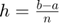
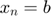
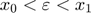
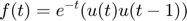

Practica 4: Convolución y Correlación de señales
Integrantes:
- Bernal Casas Hector Obed
- Cueto Chávez Leonardo Daniel
- Gutiérrez Alvirde José Martín
Contents
- Objetivos.
- Introducción.
- Problema 1 Grafique el problema PR04_1
- Problema 2 Grafique el problema PR05 e)
- Problema 3 Realice la simuación de la convolución de las señales (c) con (d) del problema 3.1-1 de Lathi
- Problema 4 Realice la simuación de la correlación de las señales (c) con (d) del problema 3.1-1 de Lathi
- Problema 5 Realice la la convolución de las señales (c) con (d) del problema 3.1-1 utilizando el comando conv de MATLAB
Objetivos.
- Conocer métodos básicos de integración numérica
- Manipulación de instrucciones en MATLAB
- Simular convoluciones y correlaciones de señales continuas
- Simular convoluciones y correlaciones de señales discretas
Introducción.
Existen varios métodos numéricos para la simulación numérica de integrales. A continuacion veremos 5 ejemplos de estos métodos numéricos.
Teorema fundamental del Cálculo
La integral se asocia a un área definida por la grafica de f(x), la recta , la recta y la recta .
Si f es una función integrable y

Si yo quisiera, por ejemplo, integrar la función en el intervalo (-1,1), me encontraria con un problema, pues la antiderivada no existe. Lo que se tendria que hacer en este caso es tratar de constuir un polinomio que se parezca a la función original, integrariamos el polinomio y el resultado sera equivalente al resultado de la integral original pero aun tendria un error.
Para el caso de la funcion presentada podemos aproximar con el polinomio P(x)=1. Entonces:
x=-1:0.001:1; x1=-100:0.01:100; g=@(x) 1.0.*(x>=-1 & x<=1); h=@(x) 0.367879.*(x>=-1 & x<=1); rectangle('Position',[-1 0 2 1],'EdgeColor','g'); hold on; fill(x,exp(-x.^2),'k'); rectangle('Position',[-1 0 2 0.367879],'FaceColor','k'); axis([-2 2 -0.1 1.5]); hold off; grid on ax = gca; ax.XAxisLocation = 'origin'; ax.YAxisLocation = 'origin'; ax.Box = 'off';
Pero si aplicamos uno de los metodos que se van a presentar podemos obtener que:
Formulas de Newton-Cotes
Las formulas de Newton-Cotes utilizan los polinomios de interpolación de Lagrenge para obtener la solución. Tenemos que reescribir a f(x) como
siendo que y
De esta manera la formula cerrada Newton-Cotes de (n+1)puntos tendra
- 
- 
Asi las obtenemos tres formulas, las cuales son;
1. Formula del trapecio (n=1)

Si aplicamos esta formula a la función presentada al inicio, obtenemos lo siguiente:
![$$\int_{-1}^{1} e^{- x^2} dx =\frac{2}{2} [e^{-1} + e^{-1}] - \frac{8}{12} [-2 e^{- \varepsilon^2} (1 - 2 \varepsilon^2 )] $$](Practica04_eq02762274555414814259.png)
2. Regla de Simpson (n=2)
Lo aplicamos a nuestra función para obtener:
3. Regla de Simpson (n=2)
![$$\int_{x_{0}}^{x_{3}} f(x) dx =\frac{3}{8} h[f(x_{0}) + 3 f(x_{1} + 3 f(x_{2} + f(x_{3})] - \frac{3 h^5}{80} f^4 (\varepsilon) $$](Practica04_eq02978848279672297907.png)
Aplicamos la formula a nuestra función para obtener
Formulas compuestas de Newton-Cotes
Las formulas compuestas de Newton-Cotes son las siguientes:
1. La regla compuesta del trapecio

Donde tenemos que:
n = num de subintervalos.
Para la función que estamos usando:
n = 10 subintervalos
2. La regla compuesta de Simpson
![$$\int_{a}^{b} f(x) dx =\frac{h}{3} [f(a)+ 2 \sum_{j=1}^{(n/2)-1} {f(x_{2 j})} + 4 \sum_{j=1}^{n/2} {f(x_{2 j - 1})} +f(b)] - \frac{b-a}{180} h^4 f^4 (\mu)$$](Practica04_eq10820853194429451699.png)
Donde se tiene que:
n = numero de subintervalos
Aplicandolo en nuestra función:
n = 10 subintervalos
Cuadratura Gaussiana
En el caso de la Cuadratura Gaussiana tenemos que
Esta formula se puede ajustar a casos generales. De esta manera tenemos:
El metodo de la Cuadratra Gaussiana se apoya de la siguiente tabla:
Para el caso de nuestra función, con n=2:
exp(- (0.5773502692)^2) + exp(- (-0.5773502692)^2)
ans =
1.4331
Observemos que nuestro resultado es solo una aproximación. Nuestra respuesta puede ser más precisa mientras más aumentemos a n.
Problema 1 Grafique el problema PR04_1
Se pide realizar la convolución de las siguientes funciones:
Podemos escribir las funciones como


Entonces escribimos el siguiente código para resolverlo:
f=@(t)exp(-t).*(t>=0 & t<=1); x=@(t) t.*(t>=-1 & t<=1); convconm(f,x)
Problema 2 Grafique el problema PR05 e)
Se pide realizar la autocorrelación de la siguiente función $ Entonces escribimos el siguiente código para resolverlo:
g = @(t) 1*((t>=0&t<3) - (t>=3&t<4)); h= @(t) 1*((t>=-3&t<0) - (t>=-4&t<-3)); convconm(g,h)
El código que usamos (convconm) para resolver los problemas 1 y 2 es el siguiente:
function convconm(x,h) figure (1) % Se crea una figura para hacer las gráficas dtau = 0.005; % Base de los rectangulos para realizar la integral hFig=figure(1); fplot(x) xl1=xlim; fplot(h) xl2=xlim; t1=min(xl1(1),xl2(1)); t2=max(xl1(2),xl2(2)); tau = t1:dtau:t2; % Intervalo de visualización del resultado ti = 0; % Indice para el vector de resultados tvec = t1:.1:t2; % traslaciones de t, cuantas integrales se calulan y = NaN*zeros(1, length (tvec)); % Resultados de acuerdo a cuantos t set(hFig, 'Position', [0 0 1000 1000]) filename = 'Problema1-2.gif'; ttt=1; for t = tvec % Cantidad de traslaciones ti = ti+1; % Indice para guardar el resultado (indice del tiempo) xh = x(t-tau).*h(tau); % resultado de la multiplicación lxh = length(xh); % longitud del resultado y(ti) = sum(xh.*dtau); % Base por altura, aproximación de la integral subplot (2,1,1), % gráfica de 2 x 1 (primera) plot(tau, h(tau), 'r-', tau, x(t-tau), 'g--', t, 0, 'ob'); %graficas axis ([tau(1) tau(end) -2.0 2.5]); % límites de los ejes patch([tau(1:end-1); tau(1:end-1); tau(2:end); tau(2:end)],... [zeros(1,lxh-1);xh(1:end-1);xh(2:end);zeros(1,lxh-1)],... [.8 .8 .8], 'edgecolor', 'none'); xlabel('\tau'); % Texto del eje X legend('h(\tau)', 'x(t-\tau)','t','h(\tau)x(t-\tau)')% Caja de Texto subplot (2, 1, 2) % gráfica de 2 x 1 (segunda) plot (tvec, y, 'k', tvec (ti), y(ti), 'ok'); xlabel ('t'); ylabel ('y(t) = \int h(\tau)x(t-\tau) d\tau'); axis ([tau(1) tau(end) -1 4]); % límites del eje grid; % malla drawnow; % efecto de movimiento continuo frame = getframe(hFig); im = frame2im(frame); [imind,cm] = rgb2ind(im,256); % Write to the GIF File if ttt == 1 imwrite(imind,cm,filename,'gif', 'Loopcount',inf); else imwrite(imind,cm,filename,'gif','WriteMode','append'); end ttt=ttt+1; end end
Problema 3 Realice la simuación de la convolución de las señales (c) con (d) del problema 3.1-1 de Lathi
Se nos pide que realizemos la convolución de las siguiente señales
Para poder resolverlo usaremos el método de la cinta. Para resolverlo crearemos 2 vectores que contengan ls alturas de las señales anteriores. Entonces tenemos:
f=[0,-9,-6,-3,0,3,6,9,0]; h=[0,0,4,2,0,2,4,0,0]; n=-4:4; convdisc([n;f],[n;h])

Problema 4 Realice la simuación de la correlación de las señales (c) con (d) del problema 3.1-1 de Lathi
Ahora se nos pide que realizemos la correlación de las señales del problema anterior. En este caso la correlación seria , siendo que f(n)es la señal (c) y h(n) es la señal (d). Como la correlación no conmuta no podriamos usar la función "convdisc" como en el problema anterior, pero tambien sabemos que la correlación es la convolución de la primer señal con la inversa de la segunda. Por lo tanto podemos solo invertir las alturas del vector h y usar la función "convdisc".
f=[0,-9,-6,-3,0,3,6,9,0];
h=[0,0,4,2,0,2,4,0,0];
n=-4:4;
convdisc([n;f],[n;h])
% En este caso podemos ver que el resultado es el mismo del problema 3.
El código que usamos (convconm) para resolver los problemas 1 y 2 es el siguiente:
function convdisc(x1,x2) Tam1 = size(x1(1,:)); Tam2 = size(x2(1,:)); T1 = Tam1(2); T2 = Tam2(2); T3 = T1+T2-1; vec1 = zeros(1,T1+2*T2-2); vec2 = zeros(1,T1+2*T2-2); Tec2 = -(T2+3):(T1+T2-6); size(vec2); size(Tec2); x3=zeros(2,T3); x3(1,:)=0:T3-1; x3(1,:)=x3(1,:)+x1(1,1)+x2(1,1); vec1(1,T2:T2+T1-1)=x1(2,:); figure (1) hFig = figure(1); set(hFig, 'Position', [0 0 1000 1000]) filename = 'Problema3-4.gif'; ttt=1; for m=0:T1+T2-2 vec2(1,1+m:T2+m)=fliplr(x2(2,:)); x3(2,m+1)=sum(vec1.*vec2); subplot(4,1,4) stem(x3(1,:),x3(2,:),'k','LineWidth',2) axis([-15 15 min(x3(2,:))-1 max(x3(2,:))+1]) ylim('auto') ylabel('g[n]','FontWeight','bold','FontSize',16); xlabel('n','FontWeight','bold','FontSize',16); grid on subplot(4,1,1) stem(x2(1,:),x2(2,:),'r','LineWidth',2) ylabel('h[m]','FontWeight','bold','FontSize',16); xlabel('m','FontWeight','bold','FontSize',16); title('CONVOLUCIóN','FontWeight','bold','FontSize',16); grid on axis([-15 15 min(x2(2,:))-1 max(x2(2,:))+1]) ylim('auto') subplot(4,1,2) stem(x1(1,:),x1(2,:),'b','LineWidth',2) ylabel('f[m]','FontWeight','bold','FontSize',16); xlabel('m','FontWeight','bold','FontSize',16); grid on axis([-15 15 min(x1(2,:))-1 max(x1(2,:))+1]) ylim('auto') subplot(4,1,3) stem(Tec2,vec2(1,:),'g','LineWidth',2) axis([-15 15 min(vec2)-1 max(vec2)+1 ]) ylim('auto') ylabel('h[n-m]','FontWeight','bold','FontSize',16); xlabel('m','FontWeight','bold','FontSize',16); grid on drawnow; pause(0.4) vec2 = zeros(1,T1+2*T2-2); frame = getframe(hFig); im = frame2im(frame); [imind,cm] = rgb2ind(im,256); % Write to the GIF File if ttt == 1 imwrite(imind,cm,filename,'gif', 'Loopcount',inf); else imwrite(imind,cm,filename,'gif','WriteMode','append'); end ttt=ttt+1; end end
Problema 5 Realice la la convolución de las señales (c) con (d) del problema 3.1-1 utilizando el comando conv de MATLAB
Nuevamente usaremos las señales (c) y (d) para resolver este problema. Igual que con los casos anteriores podemos usar el metodo de la cinta, pero esta vez usaremos el comando conv de MATLAB.
f=[-9,-6,-3,0,3,6,9]; h=[4,2,0,2,4]; c=conv(f,h); subplot(1,1,1) stem(-5:5,c,'filled','r') xlim([-6 6])